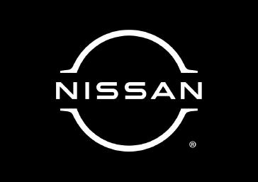

Nissan (jap. 日産自動車株式会社 Nissan Jidōsha Kabushiki-gaisha) japoński producent samochodów i autobusów z siedzibą w Jokohamie.
Początki przedsiębiorstwa sięgają 1911 roku, kawał Hashimoto założył firmę automobilową Kwaishinsha w Tokio. Hashimoto skonstruował pierwszy samochód osobowy o nazwie DAT, będący anagramem nazwisk wspierających projekt (Den, Aoyama, Takeuchi). W 1919 roku w Osace została firma Jitsuyo Jidosha, która połączyła się z Kwaishinsha w 1926 roku. W latach 30. wystał prototyp o nazwie Datson, później zmieniony na Datsun.
1 kwietnia 1934 roku firma przyjęła nazwę Nissan Motor Co. Ltd. Po nie Nissan, współpracując z brytyjskim Austinem, stał się drugim co do wielkości producentem samochodów w Japonii. W 1983 roku nazwę Datsun zastąpiono Nissan. W 1989 roku wprowadzono markę Infiniti na rynek amerykański.
W 1999 roku Renault kupił 35% akcji Nissana, a w 2002 roku Nissan nabył 15% akcji Renault. Obecnie Renault posiada 43,4% akcji Nissana. W 2010 roku rozpoczęła się współpraca Renault-Nissan Alliance z Daimler AG.
W latach 2010-2013 Nissan otrzymał około 1,8 mld dolarów dotacji z programów federalnych i stanowych w USA. W 2015 roku Nissan wyprodukował ponad 5,1 mln pojazdów, co było najlepszym wynikiem w historii firmy. Nissan działa w ponad 160 krajach i regionach.